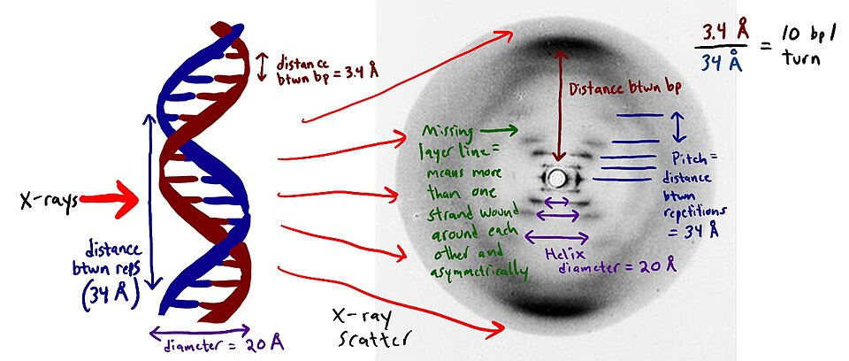

La herencia tiene forma: el ADN es una escalera de caracol que sabe copiarse a sí misma
La revista Nature publica el modelo de James Watson y Francis Crick: la molécula que transmite los caracteres de padres a hijos es una doble hélice cuyos peldaños encajan de a pares. Con una modestia que no engaña a nadie, los autores anotan que la estructura sugiere, por sí sola, cómo se copia la vida.

En una sola página de la revista Nature, aparecida hoy, dos investigadores casi desconocidos del laboratorio Cavendish de Cambridge proponen la solución de uno de los enigmas más viejos de la naturaleza: cómo hace la vida para transmitirse. El norteamericano James Watson, de veinticinco años, y el británico Francis Crick, de treinta y seis, sostienen que el ácido desoxirribonucleico —el ADN, la sustancia de la herencia— tiene la forma de una doble hélice: dos largas cintas enroscadas una alrededor de la otra, como los pasamanos de una escalera de caracol, unidas por peldaños que encajan siempre de a pares complementarios.
El hallazgo no salió de un tubo de ensayo, sino de un juego de recortes de cartón y varillas de metal armado sobre una mesa. Watson y Crick no hicieron experimentos propios: reunieron lo que sabían la química y la cristalografía y probaron formas hasta que una encajó con todos los datos a la vez. La clave estaba en el apareamiento de las cuatro «letras» químicas de la molécula, cada una siempre frente a otra determinada, de modo que cada cinta lleva escrita la receta de su compañera. Fue ese detalle, y no la elegancia de la espiral, lo que les heló la sangre: entendieron que habían encontrado, de paso, el mecanismo de la copia.
Es de justicia decir que la hélice no se habría visto sin unas fotografías que otros tomaron. En el King's College de Londres, la cristalógrafa Rosalind Franklin venía obteniendo, con paciencia y con rayos X, las imágenes más nítidas jamás logradas de la molécula; una de ellas, la que su archivo numera como «fotografía 51», muestra con claridad el aspa que solo una hélice puede dibujar. Esos datos llegaron a Cambridge y orientaron el modelo en su recta final. La señora Franklin firma en el mismo número de Nature un artículo con sus resultados, presentado como respaldo experimental de la propuesta; la historia deberá cuidar de no confundir al que mide con el que adivina.
De la pareja se cuentan ya anécdotas que pintan su carácter. Trabajaban en un cuarto compartido, discutían a los gritos y almorzaban en una taberna llamada The Eagle, donde —murmuran sus colegas— Crick habría anunciado a los parroquianos que acababan de descubrir «el secreto de la vida». El artículo, en cambio, es un prodigio de contención británica: apenas una página, y una sola frase para la mayor de sus consecuencias. «No se nos escapa», escriben con estudiada frialdad, «que el apareamiento específico que hemos postulado sugiere de inmediato un posible mecanismo de copia del material genético». Rara vez tanta trascendencia cupo en tan pocas palabras.
Habrá que dar tiempo a que otros confirmen el modelo, pero si resiste, la biología tendrá su fecha fundacional, comparable a la que abrió aquel naturalista inglés cuando, hace casi un siglo, este diario recogió su idea de que las especies descienden unas de otras. Aquella teoría explicaba por qué la vida cambia; ésta empieza a explicar cómo se hereda lo que no cambia. Entre las dos, el misterio de la descendencia queda cercado. Nadie puede aún medir las consecuencias de saber leer, algún día, la escritura con que un ser vivo se dicta a sí mismo; pero conviene anotar la fecha: hoy el hombre vio, por primera vez, la forma de su propia continuidad.